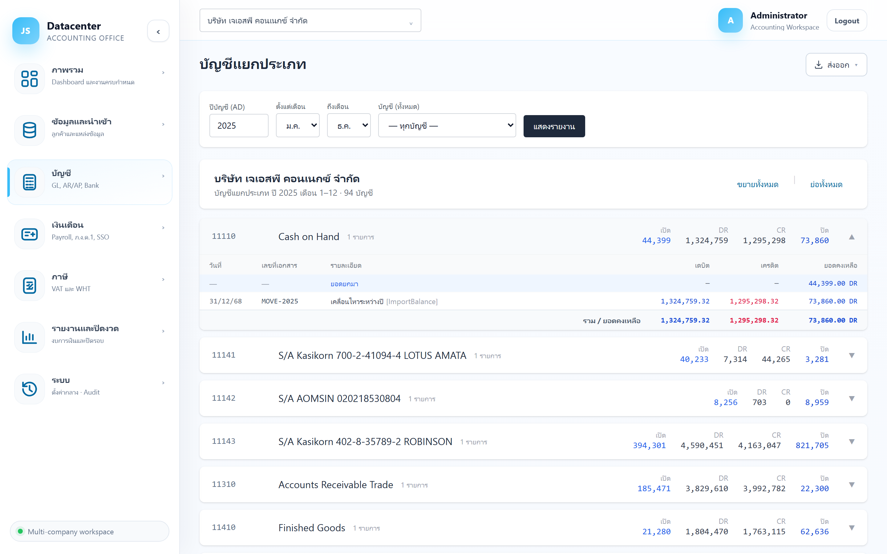

บัญชีแยกประเภท
เจาะดูรายการเคลื่อนไหวทีละบัญชี — วันที่ เลขที่เอกสาร รายละเอียด เดบิต/เครดิต และยอดคงเหลือสะสม ใช้หาที่มาของตัวเลขในงบทดลอง และตรวจหารายการที่ผิดปกติ
งบทดลอง ตอบว่า “บัญชีนี้มียอดเท่าไร” ส่วนหน้านี้ตอบว่า “ยอดนั้นมาจากรายการอะไรบ้าง” — เห็นทุกใบเอกสารที่ทำให้ยอดขยับ
1. การเข้าใช้งาน
- เลือกบริษัทลูกค้า ที่แถบด้านบน
- เปิดเมนู บัญชี → บัญชีแยกประเภท
- ตั้งงวดและบัญชีที่ต้องการ แล้วกด แสดงรายงาน
เช่นเดียวกับงบทดลอง หน้านี้ไม่ดึงข้อมูลเอง และเมื่อเปลี่ยนบริษัท ตัวกรองบัญชีกับผลลัพธ์จะถูกล้างใหม่ทั้งหมด
2. แถบตัวกรอง

| ตัวกรอง | คำอธิบาย |
|---|---|
| ปีบัญชี (AD) | ปี ค.ศ. ที่ต้องการดู เช่น 2025 |
| ตั้งแต่เดือน / ถึงเดือน | ช่วงเดือนภายในปีนั้น ค่าตั้งต้น ม.ค.–ธ.ค. |
| บัญชี | เลือกเจาะเฉพาะบัญชีเดียว หรือปล่อยเป็น “— ทุกบัญชี —” เพื่อดูทั้งผัง (รายชื่อในช่องนี้มาจากผังบัญชีของบริษัทที่เลือกอยู่) |
| แสดงรายงาน | ดึงข้อมูลตามเงื่อนไข |
ถ้าต้องการตรวจบัญชีใดบัญชีหนึ่ง (เช่น เงินฝากธนาคาร) ให้เลือกบัญชีนั้นในช่อง “บัญชี” ก่อน จะได้ผลลัพธ์เร็วกว่าและอ่านง่ายกว่าดึงทุกบัญชีมาแล้วค่อยหา
3. หัวรายงานและปุ่มขยาย/ย่อ
กล่องด้านบนบอกชื่อบริษัท ปีบัญชี ช่วงเดือน และจำนวนบัญชีที่พบ ทางขวามีปุ่ม 2 ปุ่ม
| ปุ่ม | หน้าที่ |
|---|---|
| ขยายทั้งหมด | กางรายการข้างในของทุกบัญชีพร้อมกัน — เหมาะกับตอนจะพิมพ์หรือส่งออก |
| ย่อทั้งหมด | ยุบกลับให้เหลือแต่บรรทัดสรุปของแต่ละบัญชี |
4. อ่านการ์ดบัญชี (บรรทัดสรุป)
แต่ละบัญชีแสดงเป็นการ์ด 1 ใบ บรรทัดบนสุดสรุปยอดของบัญชีนั้นในงวดที่เลือก — คลิกที่บรรทัดนี้เพื่อกาง/ยุบ
| ส่วนที่แสดง | ความหมาย |
|---|---|
| รหัสบัญชี · ชื่อบัญชี | บัญชีที่กำลังดู พร้อมจำนวนรายการในงวด |
| เปิด | ยอดยกมาต้นงวด |
| DR | รวมเดบิตทั้งงวด |
| CR | รวมเครดิตทั้งงวด |
| ปิด | ยอดคงเหลือปลายงวด (ตัวเลขเน้น) |
▼ / ▲ | สถานะยุบ/กางของการ์ดใบนั้น |
บรรทัดสรุปตัดทศนิยมออกเพื่อให้กวาดสายตาเร็ว — ถ้าต้องการยอดละเอียดถึงสตางค์ ให้กางการ์ดดูตารางข้างใน
5. อ่านตารางรายการข้างใน
เมื่อกางการ์ด จะเห็นรายการเรียงตามวันที่ โดยมีแถวพิเศษหัวท้าย
| คอลัมน์ | ความหมาย |
|---|---|
| วันที่ | วันที่ของรายการบัญชี |
| เลขที่เอกสาร | เลขที่เอกสารต้นทาง ใช้ตามกลับไปหาเอกสารจริงได้ |
| รายละเอียด | คำอธิบายรายการ — ถ้ามีวงเล็บเหลี่ยมต่อท้าย เช่น [ImportBalance] คือชื่อโมดูลต้นทางที่สร้างรายการนี้ |
| เดบิต | จำนวนเงินฝั่งเดบิต (สีน้ำเงิน) |
| เครดิต | จำนวนเงินฝั่งเครดิต (สีแดง) |
| ยอดคงเหลือ | ยอดสะสมหลังรายการนั้น พร้อมกำกับด้าน DR หรือ CR |
| แถวพิเศษ | ความหมาย |
|---|---|
| ยอดยกมา (แถบฟ้าบนสุด) | ยอดต้นงวดก่อนมีรายการใดๆ ในงวดนี้ |
| รวม / ยอดคงเหลือ (แถบเทาล่างสุด) | รวมเดบิต รวมเครดิต และยอดปลายงวดของบัญชีนั้น |
DR = ยอดคงเหลือด้านเดบิต (ปกติของสินทรัพย์และค่าใช้จ่าย) · CR = ยอดคงเหลือด้านเครดิต (ปกติของหนี้สิน ทุน และรายได้) ถ้าบัญชีแสดงด้านตรงข้ามกับที่ควรเป็น ให้สงสัยไว้ก่อนว่าอาจมีรายการลงผิดด้าน
6. วิธีใช้ตรวจหาปัญหา
- เริ่มจากงบทดลอง — หาบัญชีที่ยอดดูผิดปกติ แล้วจำรหัสบัญชีไว้
- มาที่หน้านี้ เลือกบัญชีนั้น ในช่อง “บัญชี” แล้วกดแสดงรายงาน
- กางการ์ด ไล่ดูยอดคงเหลือสะสมว่ากระโดดผิดปกติที่รายการไหน
- จดเลขที่เอกสาร ของรายการนั้น แล้วไปตรวจเอกสารต้นทางใน Express หรือแฟ้มเอกสารจริง
หน้านี้เป็นรายงาน อ่านอย่างเดียว ข้อมูลมาจาก Express ถ้าพบรายการผิดต้องแก้ที่ต้นทาง (แก้ใน Express แล้วนำเข้าใหม่) หรือบันทึกเป็นรายการปรับปรุงที่เมนูกระดาษทำการปิดงบ
7. ส่งออกรายงาน
ปุ่ม ส่งออก มุมขวาบนจะแสดงเมื่อมีข้อมูลแล้ว ส่งออกได้เป็น Excel (.xlsx), CSV หรือ PDF (พิมพ์)
ไฟล์ที่ส่งออกจะมี ทุกรายการของทุกบัญชี ที่ดึงมา (ไม่ขึ้นกับว่าบนหน้าจอกางการ์ดไว้หรือไม่)
โดยมีคอลัมน์รหัสบัญชี/ชื่อบัญชีกำกับทุกบรรทัด ชื่อไฟล์เป็น general-ledger-{รหัสบริษัท}-{ปี}
8. ปัญหาที่พบบ่อย
| อาการ | สาเหตุและวิธีแก้ |
|---|---|
| ขึ้น “ไม่พบรายการในงวดที่เลือก” | ไม่มีความเคลื่อนไหวในช่วงเดือนนั้น — ลองขยายเป็นทั้งปี หรือตรวจว่านำเข้าปีถูกต้องหรือยัง |
| ช่องเลือกบัญชีว่างเปล่า | บริษัทนั้นยังไม่มีผังบัญชีในระบบ ต้องนำเข้าข้อมูลจาก Express ก่อน |
| รายการเยอะจนหน้าช้า | เลือกบัญชีเฉพาะที่ต้องการ หรือแคบช่วงเดือนลง แทนการดึงทุกบัญชีทั้งปี |
| ยอดปิดไม่ตรงกับงบทดลอง | ตรวจว่าใช้ ปีบัญชีและช่วงเดือนเดียวกัน ทั้งสองหน้า — ถ้าตั้งค่าตรงกันแล้วยังต่าง ให้แจ้งผู้ดูแลระบบ |
เมื่อยอดบัญชีถูกต้องแล้ว ขั้นต่อไปคือทำรายการปรับปรุงที่เมนู กระดาษทำการปิดงบ